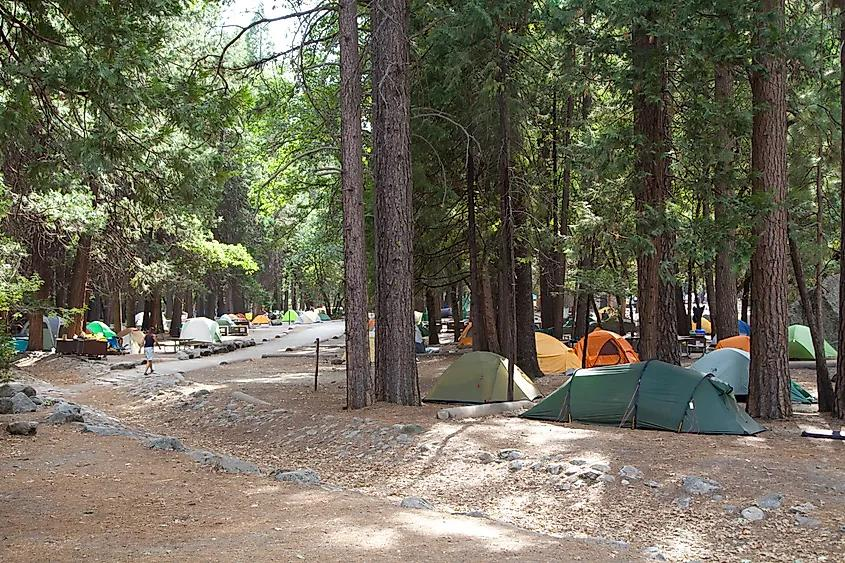

春之美 · 瀑布奔涌
一年中瀑布最壮观的季节
积雪开始融化，园内所有瀑布同时进入丰水期。优胜美地瀑布的轰鸣声 可以传遍整个山谷，雾径的"水雾石阶"也正是此时最具冲击力。
气温宜人、野花初绽，是徒步与摄影的黄金窗口。 代价是天气多变——午后阵雨常见，高海拔步道可能仍有残雪。
水量最盛
所有瀑布同时达到峰值，是唯一能看全瀑布群的时段。
气温舒适
谷底白天 15–25℃，适合长时间户外活动。
天气多变
阵雨频繁，高海拔仍有积雪，需备防水装备。
高地未开
蒂奥加路与冰川点路通常还未通车。
夏之美 · 万物繁茂

全部开放，也最拥挤
蒂奥加路与冰川点路通车，整个公园完全打开。高地的图奥勒米草甸 是绝佳避暑地，气温比谷底低 5–8℃。
但这也是人最多的季节：入口排队、谷底堵车、车位难求都可能发生。 清晨与傍晚的光线依然动人，只是要为此早起。
全域开放
所有道路、步道与区域都可抵达，行程最自由。
活动最多
徒步、露营、攀岩、游泳的条件都最成熟。
人潮拥挤
停车与排队是最大痛点，建议早出发、多用班车。
瀑布减量
8 月起多数瀑布急剧变小甚至断流。
秋之美 · 金色静谧

综合体验最好的季节
夏日人潮散去，气温转凉，草甸与林间染上层层金色。 空气能见度全年最高，纪念碑般的山水仿佛重归宁静，常能独享。
季初仍可经由蒂奥加路进入高地；需要注意谷中部分瀑布 已进入枯水期，看瀑布的话要选早秋。
人少清净
非节假日时段游客量显著下降，观景点容易独享。
色彩与光线
金色草甸配低角度阳光，是摄影的黄金季节。
瀑布枯水
除新娘面纱瀑布外，多数瀑布只剩细流或断流。
昼夜温差
夜间气温可降至 0℃ 附近，露营需备保暖装备。
冬之美 · 雪落山谷

淡季的童话世界
白雪覆盖山谷，瀑布结成蓝白色冰瀑，雾凇挂满松枝。 游客锐减，你可以安静地站在同一个观景点很久很久。
谷底仍可正常抵达，但冰川点路、蒂奥加路等高山道路 通常因积雪封闭，实际能去的主要是谷底与瓦沃纳一带。
游客最少
几乎没有排队与停车压力，体验非常从容。
独特景观
冰瀑、雪松、雾凇，是其他季节看不到的画面。
道路封闭
高地无法驾车抵达，部分步道因积雪关闭。
需带链
降雪时通常要求车辆携带防滑链，请查询路况。
四季横向对比
| 季节 | 瀑布水量 | 游客密度 | 道路开放 | 适合 |
|---|---|---|---|---|
| 春 4–6 月 | 最盛 | 中等 | 谷底开放，高地多封闭 | 看瀑布、徒步 |
| 夏 7–8 月 | 偏少（8 月枯） | 最多 | 全域开放 | 高地避暑、露营 |
| 秋 9–10 月 | 枯水 | 较少 | 季初全域开放 | 摄影、清静游览 |
| 冬 11–3 月 | 冰瀑 | 最少 | 仅谷底与南侧 | 雪景、安静独处 |
怎么选月份
- 只想看瀑布：5 月或 6 月初，这是唯一能看全瀑布群的窗口。
- 想避暑、上高地：7–8 月，蒂奥加路通车，但要有忍受人潮的心理准备。
- 想避开人群又不失美景：9 月下旬到 10 月，综合体验最好。
- 想看雪景、不介意受限：1–2 月，谷底安静得像私人领地。
- 想看火瀑奇观：2 月中下旬，且需要运气配合水量与阳光角度。